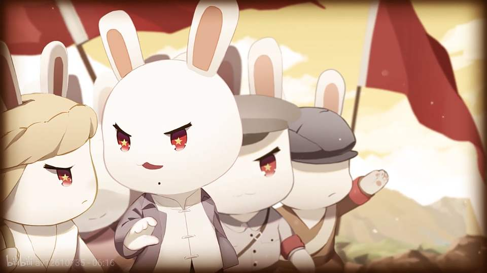

<!DOCTYPE html>
 <html>
     <meta charset="UTF-8">
     <meta name="viewport" content="width=device-width,initial-scale=1.0">
     <meta http-equiv=X-UA-Compatible" content="ie=edge">
     <title>谢嘉欣HTML期中作业</title>
     <style>
        h1 {color: rgb(0, 153, 255)}
        h2 {color: yellowgreen}
        h3 {color: rgb(218, 218, 23)}
        h4 {color: rgb(116, 116, 69)}
        p {color:white}
        div
{
background:url(背景2.png);
background-size:100% 100%;
-moz-background-size:100% 100%; 
background-repeat:no-repeat;
}
        p 
{
border:red solid thin;
outline-style:dotted;
outline-color:#7fb87f;
}
        h1
{
text-shadow: 5px 5px 5px #2f00ff;
} 
h2
{
text-shadow: 4px 4px 4px #FF0000;
}
h3
{
text-shadow: 3px 3px 3px #00ccff;
}
h1 {font-size: 300%}
h2 {font-size: 250%}
p {font-size: 200%}
h4 {font-size: 200%}
    </style>
    <style type="text/css">
      body {background-color:rgb(13, 15, 15);}
      </style>
 </html>
<html>
<head>
   <title>HTML期中作业</title>
</head>
<body>
       <h1>HTML期中作业</h1>
       <h3>网页核心：推荐《那年那兔那些事儿》from计一谢嘉欣</h3>
                                           
     <div2>
      <br>&nbsp;
       <h2>《那年那兔那些事儿》简要介绍</h2>
       <p>由国内军迷网友“逆光飞行”创作的系列漫画《那年那兔那些事儿》将中华人民共和国建立前后的国内外一些军事和外交的重大事件以动物漫画的形式展现出来，
       给本来严肃的历史增添了不少趣味性。新浪微博，超级大本营论坛，飞扬军事论坛，那年那兔那些事儿贴吧同步更新。而且相应的视频、书籍和玩具已经相继推出。
其前期素材主要来源于“野风之狼”写作的长贴《小白兔的光荣往事》。</p>
</div2>
       

      <h2>人物介绍</h2>
       
       <h4><strong>1.兔子</strong></h4>

<p>外表呆萌无害的小白兔，志向高远、年富力强、常开外挂，充满亲和力；另一方面，这一派看似无邪的气场下，又在国际外交领域的勾心斗角内.

以强硬稳固的作风自成一系，在苏联之后稳坐英特纳雄耐尔家族的大族长宝座。

戴着一顶军绿色的帽子，腹部印有五角星。

<br><em>原型是中华人民共和国/中国共产党。</em></p>

 
 <h4><strong>2.秃子</strong></h4>
<p>种花家曾经的大当家，先兔子26年1个月出生。尽管和兔子不和，但身为种花家的一员，坚决反对台独。

<br><em>原型为中华民国/国民党(第一集开始时出现的画有两撇胡子的"萌总"是指同盟会首领孙中山，此后没有两撇胡子的指代蒋介石)。

兔子、秃子发音相同，寓意两岸本一家。 </em></p>

<br> 
<h4><strong>3.鹰酱</strong></h4>

<p>蓝星五大流氓之一（原为头目），个性自私的白头鹰，掌握着压倒性的军事力量和大量黄金资产。

似乎常自我标榜正义、宣扬资本垄断，并经常作死结仇，与兔子相爱又相杀。

<br><em>原型是超级大国美国（美国的国鸟就是白头海雕）。</em></p>

 <br> 
 <h4><strong>4.毛熊</strong></h4>

 <p>虽然样子看起来冷酷又勇猛，但其设定出乎意料的无能。

曾是兔子的老大哥，给予过兔子很多帮助，亦曾和兔子反目过。

逝世后家产由大毛、二毛等十几个儿子分割（指苏联解体）。

<br><em>原型是苏维埃联盟（毛熊第1集开始没有共产党标志，是代表俄罗斯帝国，此后代表苏联）。</em>

</p> <br>
<h4><strong>5.脚盆鸡 </strong></h4>

 <p>一个以鹤自称，但其实是个好战毛贼的家伙，经常对鹰酱喊爸爸，也称兔子是“赤兔”。

常跟随暴力强者，倔强、顽固、喜欢自圆其说，是兔子挥之不去的鸡肋对手兼绊脚石。

<br><em>原型是日本(脚盆源自英语Japan)。</em></p>

<h4><strong>6.河马</strong></h4>

<p>平淡无奇身处非洲的河马，兔子的坚实盟友之一（群）。

<br><em>原型为非洲各国</em></p>

 <br> 
 <h4><strong>7.南棒</strong></h4>

<p>以鹰酱为靠的南棒，头顶戴着美军陆军头盔，
<br><em>原型为韩国（南朝鲜）。</em></p>

<h4> <strong>8.北棒</strong></h4>

<p>以毛熊为靠的北棒，头顶戴着红星军帽，
<br><em>原型为朝鲜（北朝鲜）。</em></p>

 <br>
 <h4> <strong>9.巴巴羊</strong></h4>

 <p>白象的死对头，同兔子好得穿起一条裤子的“小小弟”巴铁。
 <br><em>原型为巴基斯坦，形象设定格外地软萌娇小。</em></p>

 <br>
 <h4><strong>10.高卢鸡</strong></h4>

 <p>蓝星五大流氓之一，总嫌自己戏份太少。

 <br><em>原型为法国</em></p>

 <h4><strong>11.汉斯猫</strong></h4>

 <p><br><em>原型为德国 </em>，二战期间(希特勒时期)为汉斯虎，此后由汉斯猫两兄弟(分别代表民主德国和联邦德国)分家继承，后在海湾战争前夕团聚(指两德统一，戏份较少。
</p>

<h4><strong>12.约翰牛</strong></h4>

 <p><br>蓝星五大流氓之一，腹部有英国米字旗，鹰酱的小弟。

 <br><em>原型为英。</em></p>

 <br>
 <h4><strong>13.大白象</strong></h4>

 <p>头顶戴有天竺特色头巾的白象，因为边境分割问题与兔子和巴巴羊都有冲突。

 <br><em>原型是印度</em>。</p>
        
      <h2>剧情介绍</h2>  
      <div >
        <!--正文-->
   <P>&nbsp;&nbsp;&nbsp;&nbsp;&nbsp;&nbsp;&nbsp;&nbsp;“90后、00后是否比他们的父辈更爱国？”这是一个在网上很热的话题。是的，少数人国防意识的弱化、爱国主义情怀的缺失，再加上受多元化社会思潮的影响，部分青少年的世界观、价值观发生偏移，一些言行比如以穿日军军服、以在网上“喷”英雄为乐等更是令人发指。加强全民国防教育、增强爱国主义情怀，迫在眉睫却任重道远。
   <br>&nbsp;&nbsp;&nbsp;&nbsp;&nbsp;&nbsp;&nbsp;&nbsp;《那年那兔那些事儿》动漫作品的横空出世，为国防教育找到了一个新的切入口。
   <br>&nbsp;&nbsp;&nbsp;&nbsp;&nbsp;&nbsp;&nbsp;&nbsp;还记得那只火爆网络的“种花家”兔子吗？2018年，兔子又回来啦！
   <br>&nbsp;&nbsp;&nbsp;&nbsp;&nbsp;&nbsp;&nbsp;&nbsp;1月17日，陆军政治工作部文工团与厦门翼下之风动漫科技有限公司联合举办的军旅动漫《那年那兔那些事儿·陆军系列》（以下简称《陆军系列》）座谈研讨会举行。
   <br>&nbsp;&nbsp;&nbsp;&nbsp;&nbsp;&nbsp;&nbsp;&nbsp;《陆军系列》用12集的内容讲述了南昌起义、井冈山斗争、长征、抗日战争、解放战争、朱日和演习等，借助可爱、呆萌的“中华兔”形象，以诙谐幽默的表达方式、虐心的题材、“燃”的主题、接地气的视听语言，展示了波澜壮阔的中国革命斗争史，令观众笑中带泪，亦学亦思。
   <br>&nbsp;&nbsp;&nbsp;&nbsp;&nbsp;&nbsp;&nbsp;&nbsp;同前三季一样，《陆军系列》开播即受网友追捧，1月3日在全网播出完毕，截至目前全网点击量逾1.2亿。
   <br>&nbsp;&nbsp;&nbsp;&nbsp;&nbsp;&nbsp;&nbsp;&nbsp;2009年，“中华兔”在军迷林超（网名逆光飞行、麻蛇）的笔下诞生，自娱自乐了两年后，林超开始创作系列漫画《那年那兔那些事儿》（以下简称《那兔》）。一群兔子在种花（中华）家一穷二白的时候（清末割地赔款，丧权辱国），通过自身的努力与奋斗（抵御外敌，光复山河），战胜了鹰酱（赢得朝鲜战争，克服了对中国的外交孤立和军事打压），并且养殖出了自己的大蘑菇蛋（“两弹一星”等），发展成为蓝星最强五人之一（成为联合国常任理事国）。
   <br>&nbsp;&nbsp;&nbsp;&nbsp;&nbsp;&nbsp;&nbsp;&nbsp;2013年，《那兔》连续5个月获得新浪微漫画激励计划一等奖，并获得第二届微漫画大赛一等奖；2015年3月，《那兔》动漫在全网播出，成为二次元世界里罕见的军事题材作品，豆瓣评分也达到了8.8的高分；2015年10月，《那兔》第二季开播，次年《那兔》第三季开播……目前第四季《陆军系列》已经播出，林超投入到第五季的创作中。
   <br>&nbsp;&nbsp;&nbsp;&nbsp;&nbsp;&nbsp;&nbsp;&nbsp;《那兔》是在互联网时代背景下，将主旋律内核和商业化的壳有机结合在一起的成功尝试。
   <br>&nbsp;&nbsp;&nbsp;&nbsp;&nbsp;&nbsp;&nbsp;&nbsp;90后、00后是在互联网时代成长的群体，深受二次元文化影响，有着新的审美范式，怎么样用互联网的思维和传播方式跟这一代年轻人对话沟通？这就需要主动进入互联网，拥抱互联网，打破次元壁，用他们易于接受的方式来讲故事。中国网络视听服务协会周结副秘书长认为：“《那兔》就是一种尝试，就是放下身段，讲人话，卖得了萌，能自嘲，能腹黑，能跟传播对象平等对话。”
   <br>&nbsp;&nbsp;&nbsp;&nbsp;&nbsp;&nbsp;&nbsp;&nbsp;全网有11个视频网站播放《那兔》，其中在哔哩哔哩播放量最高。B站是国内二次元用户的聚集地，其主要用户年龄大概在16~23周岁，以高中生和大学生为主。B站的观众年龄相对较小，容易接受轻松的叙事方式和卡通化的表现，他们充满了好奇心，会去挖掘新的好的内容，会成为粉丝，“安利”好内容到身边的每一个人，这就是B站用户的“自来水效应”，由此形成互动传播。《那兔》的形式和包装正是找到了和这批观众的契合点，才受到他们的热捧。
   <br>&nbsp;&nbsp;&nbsp;&nbsp;&nbsp;&nbsp;&nbsp;&nbsp;年轻军官蒲云龙接触《那兔》大概是2013年，那时他还在军校读书，“入坑”比较早，见证了《那兔》从漫画到动画的发展历程。“兔子很萌很搞笑，形象设计生动，同时含义丰富，是我‘入坑’的原因。”他向记者坦言，当他看到“再给老子一块砖，老子再去三八线上浪一回”这句话的时候直接泪奔，原来这就是老兵的情怀。那会儿网上有很多“愤青”，蒲云龙看了《那兔》之后就推荐给了高中同学，说要好好治治他们的“愤青病”。
   <br>&nbsp;&nbsp;&nbsp;&nbsp;&nbsp;&nbsp;&nbsp;&nbsp;张权是一名普通战士，他看《那兔》时正赶上两年服役期满，面对走留，心里很纠结。“是‘科研兔’们为了学习，不怕吃苦，不畏艰难，厚着脸皮去求人学的故事感染了我，我当时热血沸腾，备受鼓舞。最终选择留下，因为我觉得在部队里能更好地传承长辈们的这些精神。”在张权看来，虽然这是一部动漫，但写出了当时的背景，让处在当代的他们体会出当时的不容易，能非常直接地感受到它的教育意义。
   <br>&nbsp;&nbsp;&nbsp;&nbsp;&nbsp;&nbsp;&nbsp;&nbsp;第四季《陆军系列》与以往军人的形象有所区别，网友直呼“又燃又虐”，重回那个山河骤变、风云激荡的年代，很多年轻观众感受到了什么是热血、什么是信仰。忠实的粉丝们通过网络分享将感动传递给他们身边的朋友，一传十、十传百，产生强大的口碑效应，而这就是互联网传播的巨大能量。
   <br>&nbsp;&nbsp;&nbsp;&nbsp;&nbsp;&nbsp;&nbsp;&nbsp;“我是看着你的漫画长大的！”在外面演讲时，林超有时会碰到同学冲他这样大喊，让他哭笑不得，也有人告诉他，因《那兔》的影响而上了军校或者参了军，还有人把动漫推荐给自己的老兵爷爷看。
   <br>&nbsp;&nbsp;&nbsp;&nbsp;&nbsp;&nbsp;&nbsp;&nbsp;爱国主义内核让这部动漫具备强大的感召力。有些年轻人不是不爱国，而是缺乏正确的途径引导。《那兔》将历史上的重大事件用简单有趣的方式讲述出来，引起年轻一代的兴趣，产生共鸣，激发其爱国情怀，当他们被引领入门之后，自然会主动地去了解那段波澜壮阔的历史。
   <br>&nbsp;&nbsp;&nbsp;&nbsp;&nbsp;&nbsp;&nbsp;&nbsp;林超将内心的责任感当作创作的驱动力，他想告诉更多的年轻人，这个国家坚持到今天的不易，让他们记住那些曾为共和国的建立和成长奋斗过、牺牲过、付出过血与泪的英雄们。“很多年轻人是不清楚那段历史的，希望他们看了动画之后，能对先辈们多一份敬重之情。”林超感慨地对记者说。
   <br>&nbsp;&nbsp;&nbsp;&nbsp;&nbsp;&nbsp;&nbsp;&nbsp;一个作品之所以受到大家欢迎，其思想内核例如理想、信仰必定是能感染人的，其表达方式例如平等的人与人之间的交流必定是让人乐于接受的。《那兔》系列动漫不仅是新形势下军事文化传播的成功案例，也是互联网时代对年轻人进行爱国主义教育的一次成功示范。
   <br>&nbsp;&nbsp;&nbsp;&nbsp;&nbsp;&nbsp;&nbsp;&nbsp;张青是在读大一时看到的《那兔》，不久之后，他就走进了军营。“《那兔》真的挺虐的，特别是先辈们浴血奋战的情节是‘高虐’。当看到第四集里两架歼－11护航运送志愿军烈士遗骸回国的客机画面，配着背景音乐《追梦赤子心》，我只有一个念头，就是也想去当兵。每一个兔子心中都有一个中国梦，我的心中也有个中国梦、强军梦。”
   <br>&nbsp;&nbsp;&nbsp;&nbsp;&nbsp;&nbsp;&nbsp;&nbsp;最早接触《那年那兔那些事儿》是在读大二的时候，这是一部充满了诚意和情怀的国产动漫作品。
   <br>&nbsp;&nbsp;&nbsp;&nbsp;&nbsp;&nbsp;&nbsp;&nbsp;观看《那兔》总体是轻松愉快的，但也有令人久久不能释怀的段落。《寒冬中的冲锋号》一集中，正值隆冬大雪，兔子们隐蔽在雪堆里瑟瑟发抖，而此时对面鹰酱正因不吃罐头想要烤肉而大发脾气。兔子A不知不觉流下了口水，旁边的兔子B推了推兔子A：“不要流口水，口水会冻住的。”“嗯。亲，你的眼泪冻住了。”“不要在意那些细节，距离发起攻击还有多长时间？”
   <br>&nbsp;&nbsp;&nbsp;&nbsp;&nbsp;&nbsp;&nbsp;&nbsp;待到攻击发起时，兔子B再去推兔子A，怎么也推不醒，刚刚还互相勉励的战友已成了没有生命气息的雪堆。这时，兔子B抹去自己的眼泪，带着哭腔，告诉自己，不能哭，眼泪，也会冻住的！
   <br>&nbsp;&nbsp;&nbsp;&nbsp;&nbsp;&nbsp;&nbsp;&nbsp;这反映的是抗美援朝中的长津湖战役，这是一场在超出了人类生存极限的恶劣环境下、武器装备对比悬殊的战争，兔子们穿着单薄的服装，拿着简陋的武器，在极端的严寒中冲锋，兔子们的想法很简单：保卫种花家，振兴种花家。
   <br>&nbsp;&nbsp;&nbsp;&nbsp;&nbsp;&nbsp;&nbsp;&nbsp;我不知大家还记得《那兔》第一集里城楼上的兔子说的话吗？“亲，准备好了吗？虽然现在是我们当家了，但是一定不要忘记了当初的那个约定，用我们自己的双手，去创造一个吃得饱、穿得暖，不被人看不起的种花家！”兔子的宏愿实现了，如今中国综合国力不断提升，我们的军队有信心击败一切来犯之敌。</P>
   <p>&nbsp;&nbsp;&nbsp;&nbsp;&nbsp;&nbsp;&nbsp;&nbsp;提及《那年那兔那些事儿》这部动漫，我的思绪不禁飘到我的大学时代。我是一名大学生士兵，退役返校后第一次担任军训教官时发现，不少同学对我军的历史知之甚少，甚至混乱，更不用谈对国际局势的理解和认知了。
   <br>&nbsp;&nbsp;&nbsp;&nbsp;&nbsp;&nbsp;&nbsp;&nbsp;面对扑面而来的各种军事问题，我该如何一一详解？灵光一闪，我当即推荐了这部动漫，因为这是我见看过最简单、最直白、最生动的一部爱国主义科普动漫，“兔子”值得推荐。没想到，第二天我便在军训队伍中看到了大家互称“兔子”的场景，教官们更是成了一群“兔子”的首领“大兔子”。
   <br>&nbsp;&nbsp;&nbsp;&nbsp;&nbsp;&nbsp;&nbsp;&nbsp;还有一件事让我终身难忘。在担任预备役班长期间，有一次训练，我提前出了阵地做最后准备，在高炮掩体里面的4名预备役战士，对着被晒成黑炭的我居然唱了起来：“一条大河波浪宽，风吹稻花香两岸……”我开始感觉纳闷，皮都晒爆两次了，哪来这么清凉的意境？后来一想，原来是《那年那兔那些事儿》里面，上甘岭战役中，外面炮火连天，防空洞里坚强的兔子们一起歌唱《我的祖国》时的情景。
   <br>&nbsp;&nbsp;&nbsp;&nbsp;&nbsp;&nbsp;&nbsp;&nbsp;班里几名预备役战士萌生了对军营的向往，训练刚一结束，男兵马佳鹏参军入伍，女兵常鑫瑶更是主动申请去了最偏远艰苦的藏南地区服役，一个预备役班走出了两名战士，不可否认有“兔子”的影响因素在里面。
   <br><STRONG>《中国国防报》记者&nbsp;&nbsp;鲁文帝 </STRONG></P>
   <p>&nbsp;&nbsp;&nbsp;&nbsp;&nbsp;&nbsp;&nbsp;&nbsp;“第一名，易思义；第二名……”我满怀自信地竖着耳朵，却迟迟没听见指导员点我的名字。作为新兵连战友公认的理论学习骨干，本想通过第一次理论测试，打响自己下连“第一炮”，没想到结果却是枚“哑弹”。
   <br>&nbsp;&nbsp;&nbsp;&nbsp;&nbsp;&nbsp;&nbsp;&nbsp;每次心烦意乱的时候，我都会想起《那年那兔那些事儿》。当初迷上这部动漫，是因为我姥爷的故事。我姥爷是抗美援朝参战老兵，曾经在枪林弹雨中出生入死，如今仍有几块弹片残留在体内没取出来。与抗美援朝将士和姥爷他们相比，我的“英雄梦”还有多远？脑海中突然蹦出这个问题，顿时引起了我深刻反思。
   <br>&nbsp;&nbsp;&nbsp;&nbsp;&nbsp;&nbsp;&nbsp;&nbsp;去年9月23日，我刚从南开大学入伍到武警安徽总队没几天，就收到习主席回信。一时间，媒体蜂拥而至，报道铺天盖地，我顿时成了社会广泛关注的热点人物。镜头面前，闪光灯下，我不知不觉有些飘飘然，学习训练工作的状态也不如此前。
   <br>&nbsp;&nbsp;&nbsp;&nbsp;&nbsp;&nbsp;&nbsp;&nbsp;是啊，习主席给我们几名南开大学入伍大学生回信，是勉励，是期许，更是我们每名官兵的共同荣耀。然而，我却仅仅作为一顶属于个人的光环戴在头上，甚至一度沉浸其中不能自拔。
   <br>&nbsp;&nbsp;&nbsp;&nbsp;&nbsp;&nbsp;&nbsp;&nbsp;思想交锋，是最激烈的斗争形式。醍醐灌顶之后，我从里到外像是变了个人：学习抢上游，训练争第一，工作抢着干……强军路上脚踏实地，一步一个脚印前行的感觉真好！
   <br>武警安徽总队战士  胡一帆</p>
   </div>
 </body>
</html>